La flora de Honduras es muy variada, la selva lluviosa o pluvioselva, también clasificado como Bosque lluvioso Tropical, es uno de las más impresionantes como formación vegetal; los ecólogos la denominan "Formación Higrófila Megatérmica", por corresponder a regiones de gran humedad y constantes temperaturas altas. En los cuales hay una especie dominante única, como pinos o abetos, cubriendo grandes áreas.
 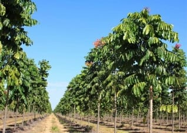
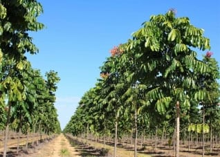
Los troncos de los árboles son rectos y lisos y sus primeras ramas nacen a gran altura del suelo. La Pluvioselva de Honduras corresponde a la región norte por debajo de los 600 metros de elevación; no hay estación seca completamente definida y abarca un 29% del total de la superficie del país. Entre las especies vegetales más típicas de esta región biogeográfica se encuentran:
La Mosquitia
La zona oriental del país "La Mosquitia". Existe una gran abundancia de plantas trepadoras o enredaderas, como las lianas. Gran variedad de epifitas, siendo las más llamativas las orquídeas. Por su adaptación a la humedad ambiente, los árboles son enormes y no poseen raíces profundas sosteniéndose gracias a los grandes contrafuertes o espolones, mientras las hojas son muchas y de gran tamaño.
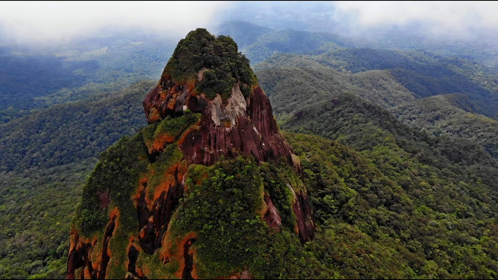
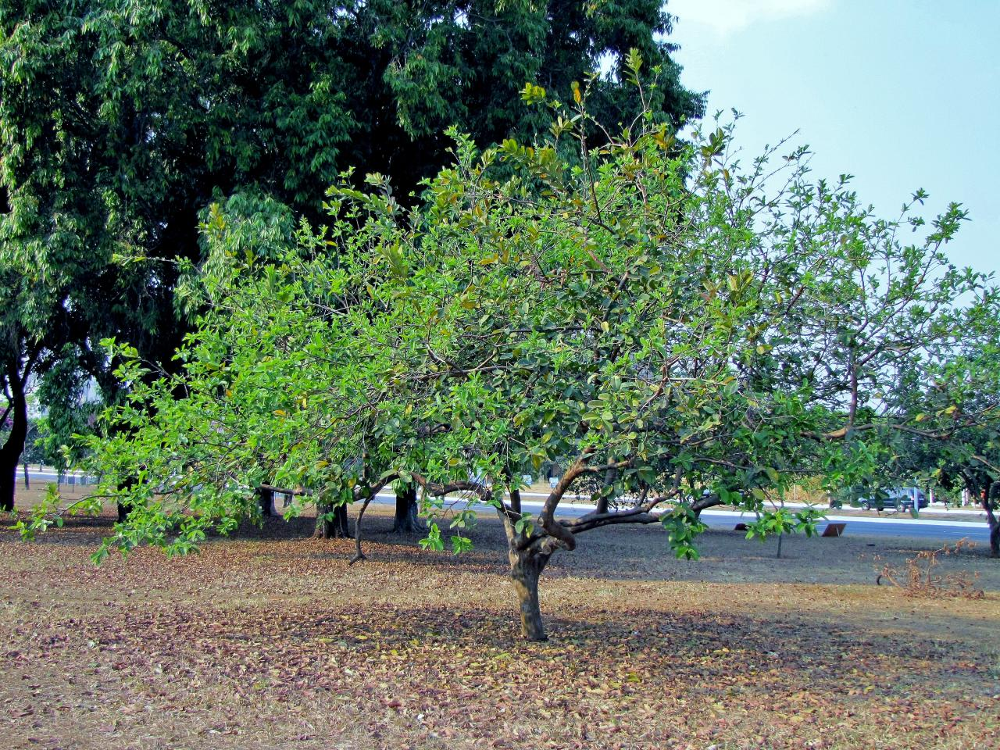
Bosques húmedos
La selva tropical o bosque lluvioso tropical es la selva o bosque denso de clima tropical húmedo que se caracteriza por unas elevadas precipitaciones (2000 a 5000 mm anuales) y una elevada temperatura media.
De todos los tipos de bosque tropical, la selva tropical es el ecosistema de mayor extensión y de mayor importancia. Su vegetación está formada por especies de hoja perenne y ancha.
Los bosques húmedos tropicales de Honduras se encuentran en Islas de la Bahía, Gracias a Dios, Colón, el norte de Atlántida y Cortés.
Bosque nuboso
Un bosque nuboso, selva nubosa o nebliselva, es generalmente un bosque húmedo montano tropical o subtropical , que se caracteriza por una alta concentración de niebla superficial, usualmente a nivel de la canopea. Los bosques nubosos se agrupan dentro de la denominada Pluvisilva.
Los siguientes parques nacionales cuentan con nubliselva:
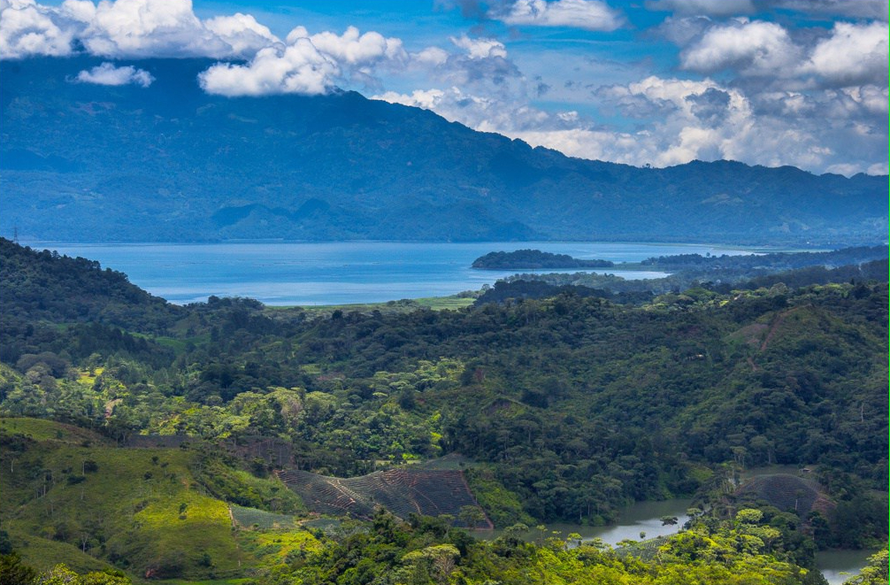
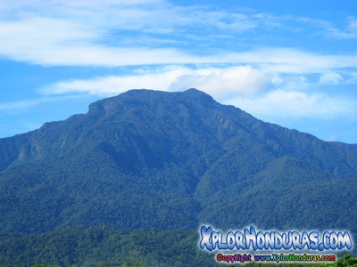
 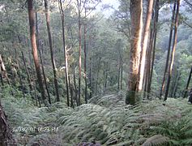
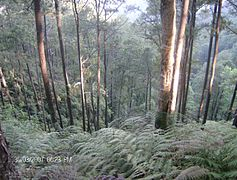
Manglares
Los manglares son un tipo de biomasa, formada por árboles muy tolerantes a la sal que ocupan la zona intermareal cercana a las desembocaduras de cursos de agua dulce de las costas de latitudes tropicales y subtropicales de la Tierra, incluyen estuarios y zonas costeras. Tienen una gran diversidad biológica con alta productividad, encontrándose muchas especies de aves como de peces, crustáceos, moluscos y otras.
Su nombre deriva de los árboles que los forman, los mangles, el vocablo mangle de donde se deriva mangrove (en alemán, francés e inglés) es originalmente guaraní[cita requerida] y significa árbol retorcido.
Los manglares de Honduras se encuentran en el Golfo de Fonseca, en los departamentos de Choluteca y Valle.
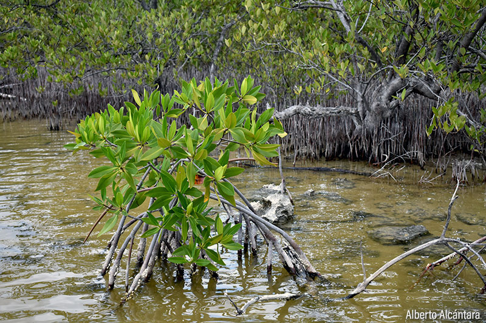
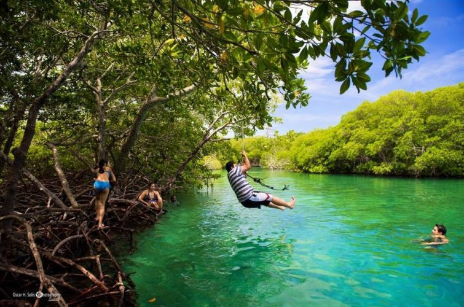
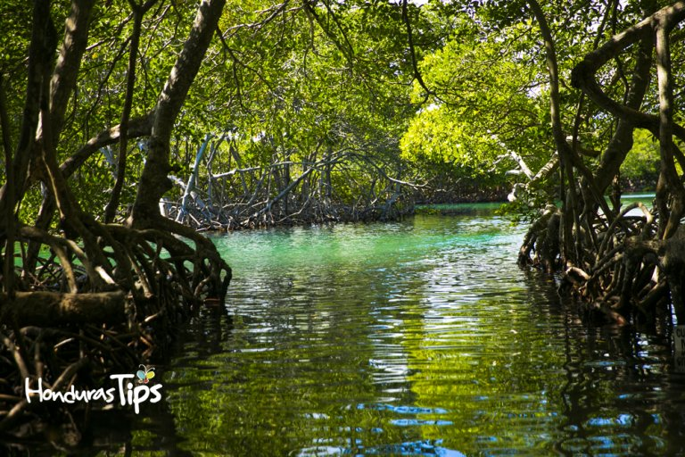
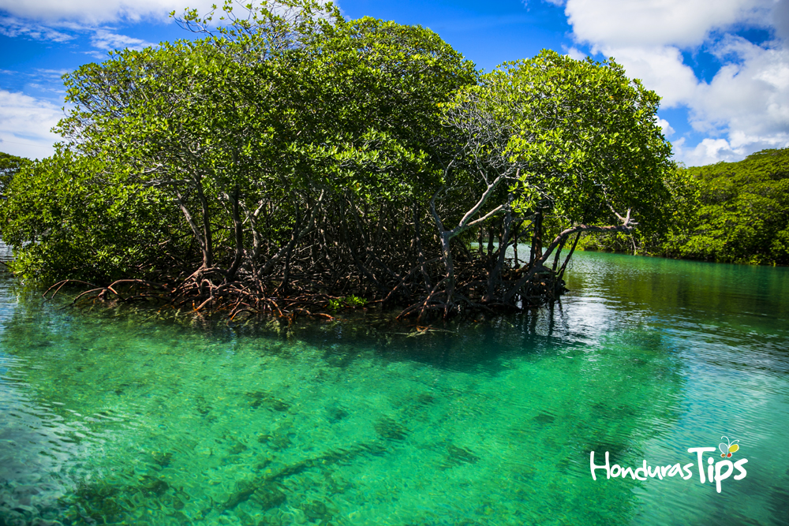